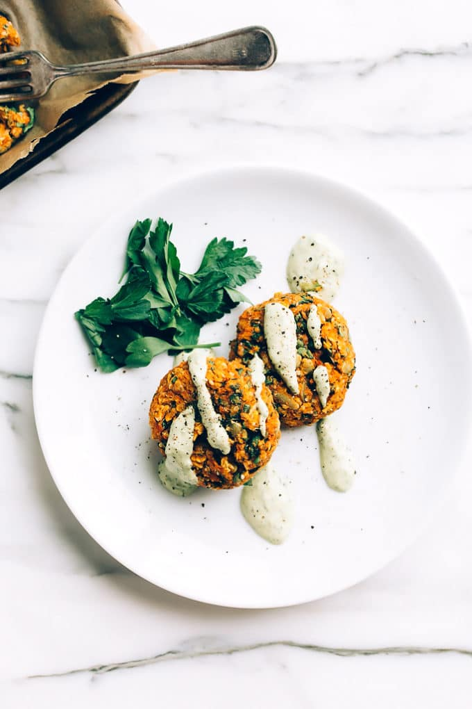

- 50g tahini
- zest and juice 1 lemon
- 1 red onion , thinly sliced
- 1 garlic clove , crushed
- 1 yellow pepper , thinly sliced
- 200g green beans , trimmed and halved
- 1 courgette , sliced into half moons
- 100g shredded kale
- 250g pack pre-cooked puy lentils
- In a jug, mix the tahini with the zest and juice of the lemon and 50ml of cold water to make a runny dressing. Season to taste, then set aside.
- Heat the oil in a wok or large frying pan over a medium-high heat. Add the red onion, along with a pinch of salt, and fry for 2 mins until starting to soften and colour. Add the garlic, pepper, green beans and courgette and fry for 5 min, stirring frequently.
- Tip in the kale, lentils and the tahini dressing. Keep the pan on the heat for a couple of mins, stirring everything together until the kale is wilted and it’s all coated in the creamy dressing.